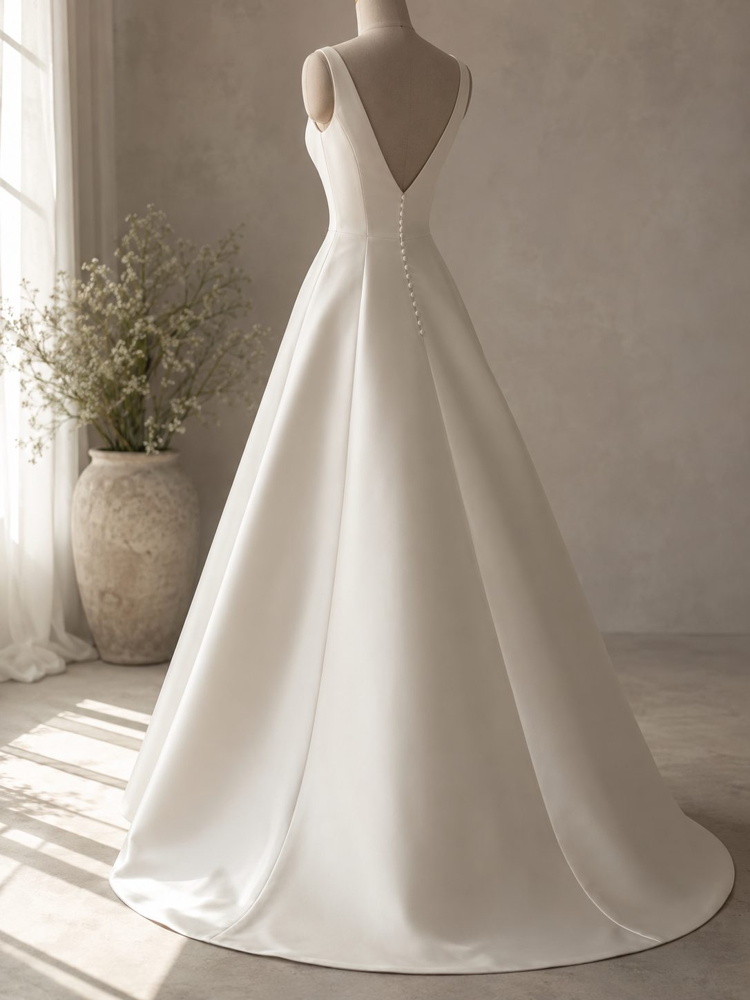
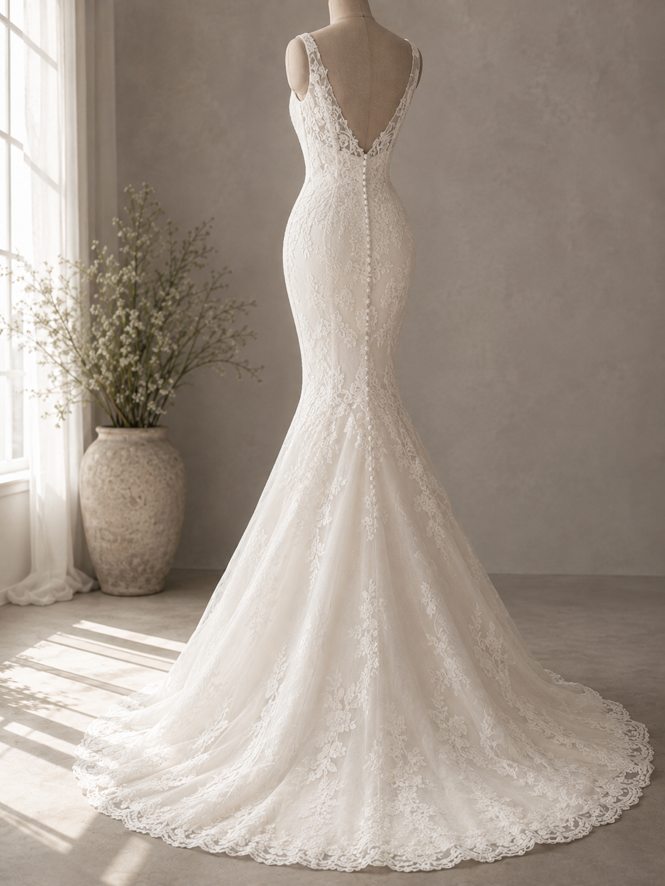
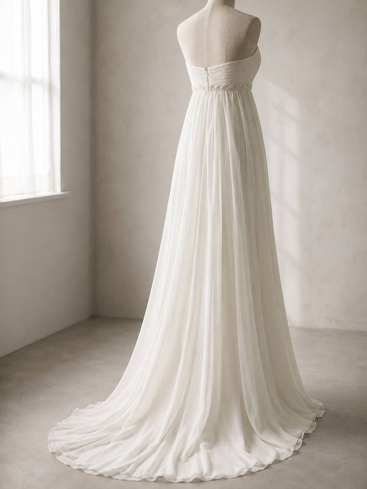
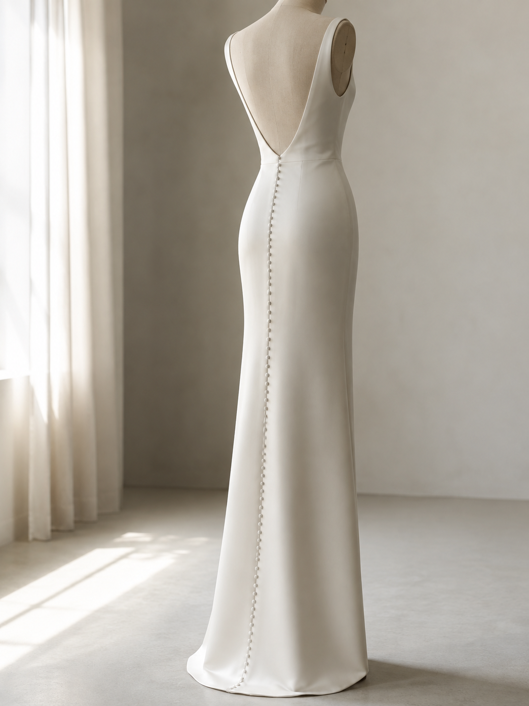

DRESS LINE
全身を鍛える必要は、
ない。
当日、見えている部分は限られています。ドレスを決めた時点で、やるべきことも決まります。試着より先に体づくりを始めてしまうと、優先順位を間違えます。
順番があります。ドレスを試着する → 出る部位を確認する → そこだけ対策する。この順で進めれば、限られた時間と予算を無駄にしません。
5つのシルエット
後ろ姿で並べています。式で最も長く人目に触れるのは背中側です。

Aライン
上半身が出る。下半身は隠れます

マーメイド
腰から下のラインを拾います

プリンセス
デコルテと肩。ウエストは締まって見えます

エンパイア
胸から上。お腹は目立ちません

スレンダー
凹凸を隠せません。姿勢が最も効きます
シルエット別に見える部位
| シルエット | 人目につく部位 | 優先すること |
|---|---|---|
| Aライン | 二の腕・背中・デコルテ | 上半身。下半身は隠れます |
| マーメイド | 腰・お尻・太もも・背中 | 下半身のライン。体重より形 |
| プリンセス | デコルテ・肩・二の腕 | 顔まわりと上半身。ウエストは締まって見えます |
| エンパイア | デコルテ・腕・首すじ | 胸から上。お腹は目立ちません |
| スレンダー | 全身のライン | 凹凸を隠せないので、姿勢が最も効きます |
共通して出るのは背中とデコルテです。どのドレスを選んでも無駄にならないので、迷っている段階ならここから始めてください。
部位ごとの対策
下半身が出るドレスを選んだ場合
マーメイドやスレンダーは、体重を落とすより形を整えるほうが効きます。単に細くしても、ラインが崩れていれば布が拾います。この目的なら下半身に特化した指導を受けるのが早い。
上半身が出るドレスを選んだ場合
デコルテと二の腕は、痩せると逆に貧相に見える部位です。落とす方向ではなく、厚みを残して整える方向の指導を選んでください。
次に読む
さらに詳しく